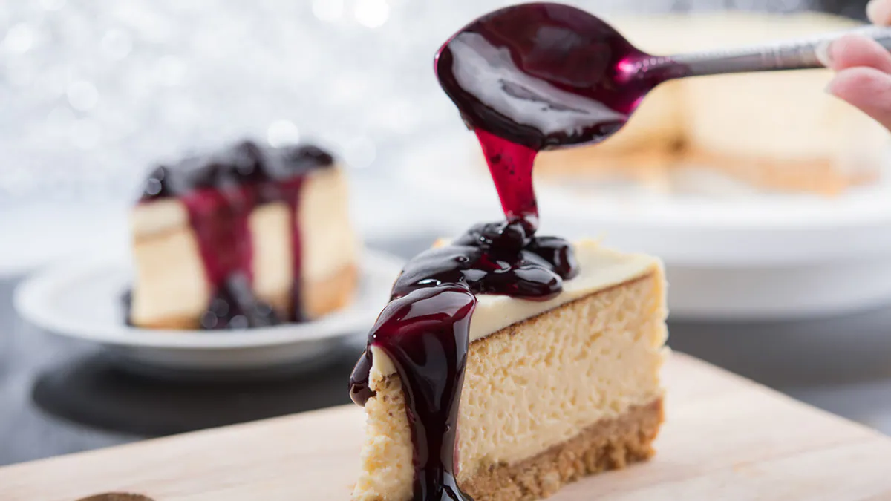

No-Bake Blueberry Cheesecake

This is a very delicious blueberry cheese cake which has been prepared without baking. This cake is perfect to make on any occasion.
Ingredients
- 1 ½ Cup digestive biscuits
- 3-4 tbsp butter, melted
- 1/4 cup sugar
- 300 gram cream cheese
- 3/4 cup icing sugar
- 1 ½ cup heavy cream
- 1 tsp vanilla essence
- 1 cup fresh blueberries
- 1 tbsp lemon juice
- 1 tbsp cornstarch
- 2-3 tbsp water
- ¼ cup granulated sugar
Directions
- To begin with, line an 8-inch springform pan with butter paper. Crush the digestive biscuits in a bowl and add melted butter and sugar. Mix well and press this mixture evenly onto the bottom of the pan. Refrigerate it for 20-30 minutes.
- Now, add the cream cheese to a bowl and whisk it until it becomes smooth. Once done, add sugar and vanilla, and whisk again. In a separate bowl, whisk the heavy cream until frothy and then gently fold it into the cream cheese mixture.
- Mix well and spread evenly over the chilled biscuit base. To prepare the blueberry topping, add fresh blueberries along with lemon juice, cornflour, sugar, and water to a pan set on a low flame.
- Allow it to simmer for a few minutes. Once done, remove it from the heat and allow it to cool.
- Top the cheesecake with the prepared blueberry topping and set it in the refrigerator for 4 to 5 hours, or ideally overnight. Remove from the pan, slice, and enjoy your delicious no-bake blueberry cheesecake.